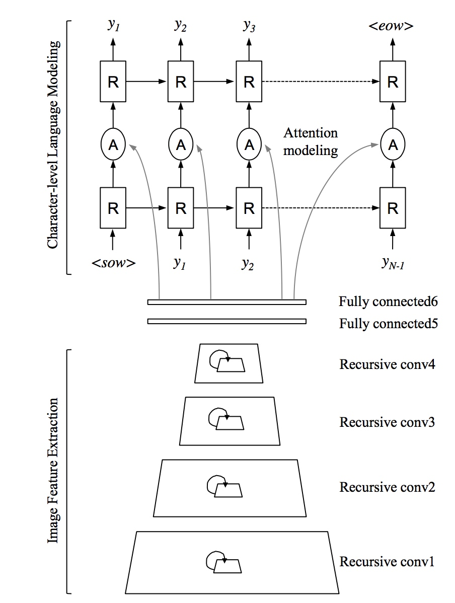
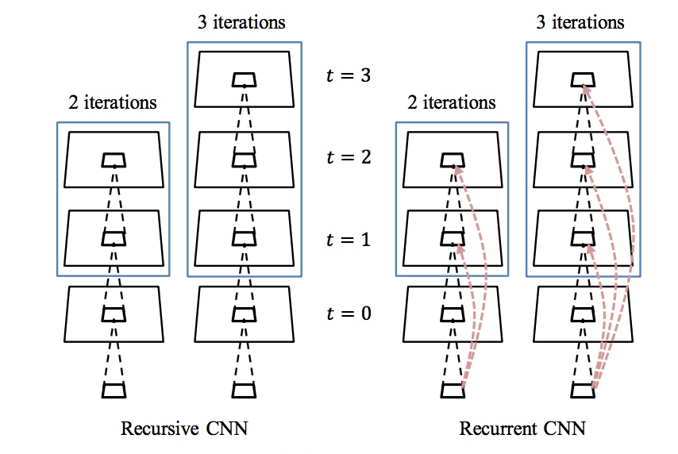
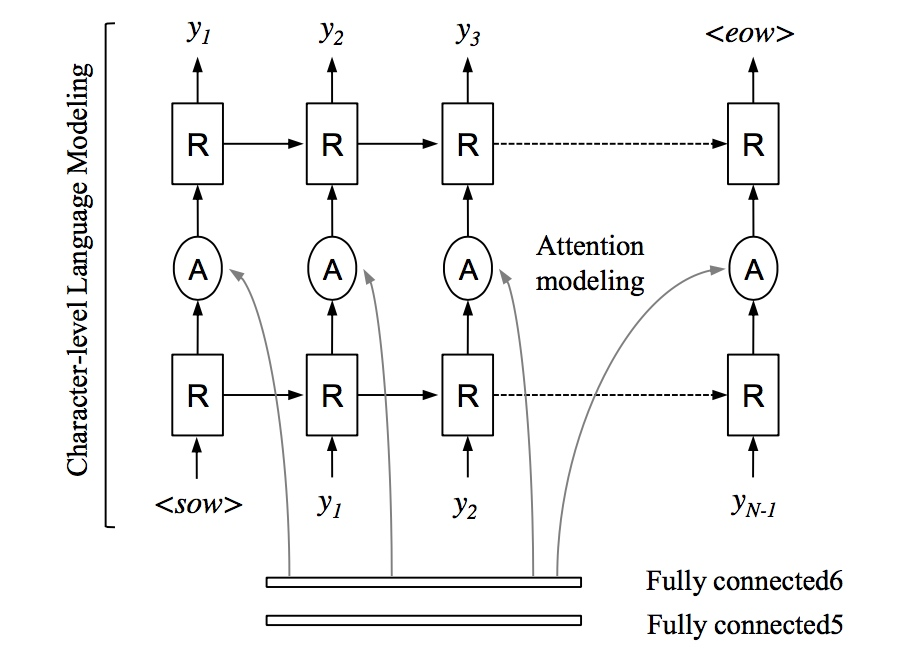

1. 简介
论文提出了 \(R^2AM\) 模型用来在自然图片中的OCR。
主要有三个贡献:
i. 用recursive cnn 来用同样多的参数却增加了网络的层数，即增加了特征提取能力。
ii. 用RNN来model character-level language。
iii. 用 soft-attention来选择更好的特征组合，并且可以end-to-end的backpropagation训练。
2. 方法介绍
论文网络结构如图所示，先使用 Recursive CNN + 2 Fully connected Layer 提取\(D-dimension\)的特征 \(\daleth\)。再将\(\daleth\)输入RNN-Attention Model学习Character-Level model。

2.1 Recursive Convolution
Recursive Convolution 简单来讲就是多个Convolution 层共享同样的权重 \(W,b\)。
对于某一层Convolution \(L_i\), 它的filter 个数为\(f_i\), kernel为\(k*k\), 它的前一层filter个数为\(f_{i-1}\), 则\(L_i\)层权重\(W\)的维度为 \(k*k*f_{i-1}*f_i\)。 也就是说，为了多个Convolution共享权重\(W\), 需要 \(f_{i-1} = f_i\)。但是cnn中一般要求filter数量逐渐增加当输入宽高逐渐减小，用Recursive Convolution就没办法增加filter数量。
为了解决这个问题，论文对于一个Recursive Convolution Block使用了两个权重\(W_{untied}\)和\(W_{tied}\)。简单来讲，就是先用一个Convolution层增加filter数量，然后后面t-1层都保持这个filter数量。

2.2 RNNs for character-level language modeling
论文中提出的模型如图所示。\( y = \{y_1, y_2,..., y_N\}, y_t \in \mathbb{R}^K\)。 \(K\)是总共character的个数,(<sow>, <eow> 也算)。 首先通过一个hidden RNN 学习 character-level language model, 再使用一个RNN通过image feature和character-level language model学习图片与输出间的关系。

3. 总结
这篇论文的主要贡献还是使用RNN来学习字符之间关系的模型。论文中比较了不同的RNN架构对结果的影响，并提出了\(RNN_{Atten}\)模型取得了state-of-the-art的结果。\(RNN_{Atten}\)的结构还是很有启发性和值得借鉴的。